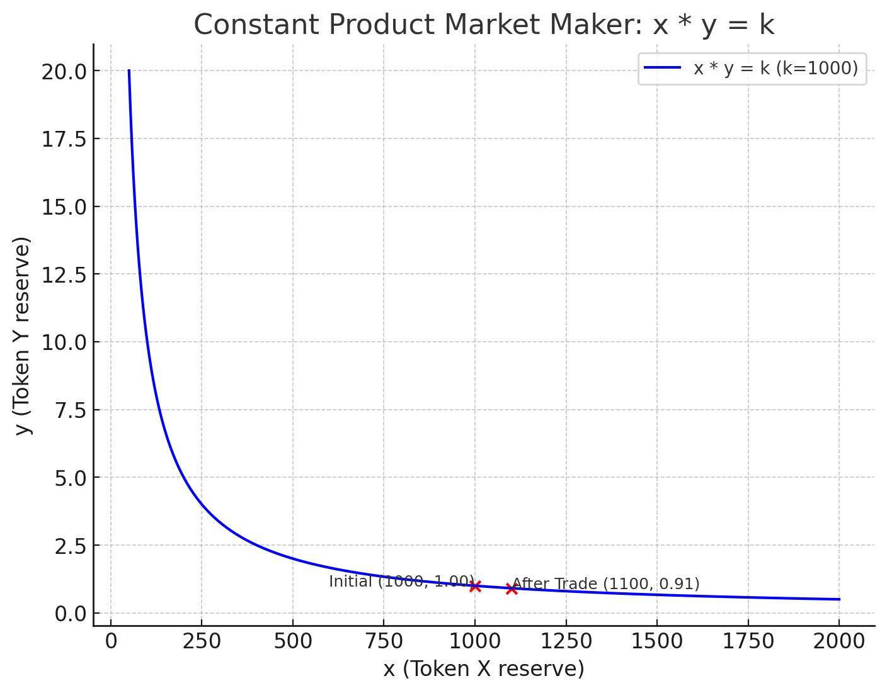

这是一个 DeFi 系列教程，在动手实践的过程中，学习和理解 DeFi 相关的概念与原理：
AMM 的全称是 Automated Market Maker，自动做市商，作用是不需要订单簿撮合交易，就可以自动完成定价与交易。
这篇文章解释了 Uniswap V2 的核心定价逻辑，并且提供了完整的合约代码示例、命令行操作步骤、实际的链上交易现场等，作为理解 AMM 的配套参考。
Uniswap V2 用的定价逻辑是恒定乘积做市商（Constant Product Market Maker, CPMM），也是我们的示例 AMM 合约在用的方法。这里有一个恒等公式：
x * y = k
意味着池子里有两种资产 x 和 y，当 x 增多的时候，y 就应该减少，y 增多的时候，x 应该减少，k 总是保持不变。
在添加初始流动性的时候，我们第一次确定下来这个 k 的值，比如我们按照 2000 USDC / 1 WETH 的价格注入初始流动性，会得到（不考虑精度）：
k = 2000
当我们想要用 USDC 换出 WETH 的时候，池子里的 USDC 增多，为了保持 k 不变，合约会计算应该保留多少 WETH，然后把相应数量的 WETH 转给我们。
当我们想要用 USDC 换出 WETH 的时候，池子里的 USDC 增多，为了保持 k 不变，合约就会把相应数量的 WETH 转给我们了。
例如，我们试图用 500 USDC 换出 WETH，此时加上初始流动性的 2000 USDC，池子里一共 2500 USDC，那么：
x = 2500
y = k/x = 2000/2500 = 0.8
这个 0.8 意味着，为了保证 AMM 池子里的 k 值恒定为 2000，池子需要转出 0.2 WETH。也就是说，我们会得到 0.2 个WETH。
我们再来用 500 USDC 买一次，此时池子里一共有 2500+500=3000 USDC，则：
x = 3000
y = k/x = 2000/3000 = 0.667
这个恒定乘积公式计算得出池子里应该保留 0.667 个 WETH，上一轮交换后还剩 0.8 WETH，所以这一轮我们实际得到 0.8-0.667 = 0.133 WETH。
对比来看，第一次用 500 USDC 可以换出 0.2 WETH，第二次用 500 USDC 就只能换出 0.133 WETH 了。随着池子里流动性的减少，WETH 的价格涨了。
这就是自动做市商的核心逻辑，价格不是写死的，而是根据池子中剩余的流动性算出来的。要注意 x 和 y 的乘积是一条曲线，因为 y=k/x，画成图是这样：
接下来会用实际的操作步骤与链上交互，来体验 AMM 的运作。
合约代码源文件在仓库：smallyunet/defi-invariant-lab@v0.0.1
首先准备两个合约，一个是 TestERC20.sol，比起标准的 ERC-20 合约，支持自定义代币精度，以及随意 mint 一些代币。
第二个要准备的合约是 SimpleAMM.sol，提供了对代币增加流动性、代币兑换等功能。合约代码不算很简单，我们会在接下来实际的操作用，逐步体会和理解这个合约的功能，以及解读源代码。
以下所有操作都在以太坊的测试网 Sepolia 上进行。
准备好命令行工具，以及设置两个环境变量：
foundryup
export RPC_URL="https://ethereum-sepolia-rpc.publicnode.com"
export PK_HEX="<YOUR_PRIVATE_KEY_HEX>"
下载合约仓库、进入到仓库根目录：
git clone https://github.com/smallyunet/defi-invariant-lab/
git switch v0.0.1
cd defi-invariant-lab
部署两个测试版本的 ERC-20 代币，一个叫 USDC，一个叫 WETH：
forge create \
--rpc-url $RPC_URL \
--private-key $PK_HEX \
--broadcast \
contracts/libs/TestERC20.sol:TestERC20 \
--constructor-args "USD Coin" "USDC6" 6
部署的合约地址是：0x84637EaB3d14d481E7242D124e5567B72213D7F2。
forge create \
--rpc-url $RPC_URL \
--private-key $PK_HEX \
--broadcast \
contracts/libs/TestERC20.sol:TestERC20 \
--constructor-args "Wrapped Ether" "WETH18" 18
部署的合约地址是：0xD1d071cBfce9532C1D3c372f3962001A8aa332b7。
如果愿意，可以这样验证下合约：
export ETHERSCAN_API_KEY=你的key
cast abi-encode "constructor(string,string,uint8)" "USD Coin" "USDC6" 6
forge verify-contract \
--chain-id 11155111 \
0x84637EaB3d14d481E7242D124e5567B72213D7F2 \
contracts/libs/TestERC20.sol:TestERC20 \
--constructor-args "0x000000000000000000000000000000000000000000000000000000000000006000000000000000000000000000000000000000000000000000000000000000a00000000000000000000000000000000000000000000000000000000000000006000000000000000000000000000000000000000000000000000000000000000855534420436f696e00000000000000000000000000000000000000000000000000000000000000000000000000000000000000000000000000000000000000055553444336000000000000000000000000000000000000000000000000000000" \
--etherscan-api-key $ETHERSCAN_API_KEY
forge verify-contract \
--chain-id 11155111 \
0xD1d071cBfce9532C1D3c372f3962001A8aa332b7 \
contracts/libs/TestERC20.sol:TestERC20 \
--constructor-args $(cast abi-encode "constructor(string,string,uint8)" "Wrapped Ether" "WETH18" 18) \
--etherscan-api-key $ETHERSCAN_API_KEY
这里的参数 30 指收取 0.3% 的手续费：
forge create \
--rpc-url $RPC_URL \
--private-key $PK_HEX \
--broadcast \
contracts/amm/SimpleAMM.sol:SimpleAMM \
--constructor-args $USDC_ADDR $WETH_ADDR 30
部署的合约地址是：0x339278aA7A09657A4674093Ab6A1A3df346EcFCF`
forge verify-contract \
--chain-id 11155111 \
0x339278aA7A09657A4674093Ab6A1A3df346EcFCF \
contracts/amm/SimpleAMM.sol:SimpleAMM \
--constructor-args $(cast abi-encode "constructor(address,address,uint16)" $USDC_ADDR $WETH_ADDR 30) \
--etherscan-api-key $ETHERSCAN_API_KEY
声明钱包地址与合约地址：
export MY_ADDR=0x44D7A0F44e6340E666ddaE70dF6eEa9b5b17a657
export AMM_ADDR=0x339278aA7A09657A4674093Ab6A1A3df346EcFCF
export USDC_ADDR=0x84637EaB3d14d481E7242D124e5567B72213D7F2
export WETH_ADDR=0xD1d071cBfce9532C1D3c372f3962001A8aa332b7
挖 100 万个 USDC，精度是 6 位数：
cast send $USDC_ADDR "mint(address,uint256)" $MY_ADDR 1000000000000 \
--rpc-url $RPC_URL --private-key $PK_HEX
挖 1000 个 WETH，精度是 18 位数：
cast send $WETH_ADDR "mint(address,uint256)" $MY_ADDR 1000000000000000000000 \
--rpc-url $RPC_URL --private-key $PK_HEX
铸币的交易与结果可以直接在浏览器上看到，这个 是挖 USDC 的交易，这个 是挖 WETH 的交易。
给 AMM 授权是因为接下来想要给 AMM 添加流动性，添加流动性会调用 addLiquidity 函数，其中用到了 transferFrom，所以需要先给合约授权，让合约可以动用我的 USDC 和 WETH 代币：
cast send $USDC_ADDR "approve(address,uint256)" $AMM_ADDR "0xffffffffffffffffffffffffffffffffffffffffffffffffffffffffffffffff" \
--rpc-url $RPC_URL --private-key $PK_HEX
cast send $WETH_ADDR "approve(address,uint256)" $AMM_ADDR "0xffffffffffffffffffffffffffffffffffffffffffffffffffffffffffffffff" \
--rpc-url $RPC_URL --private-key $PK_HEX
添加流动性的 函数 比较简单，大概是合约里有两个变量 reserve0 和 reserve1，调用 addLiquidity 函数的时候，会向 AMM 合约转账参数数量个代币。
先以 2000 USDC / 1 WETH 的价格，添加初始流动性：
cast send $AMM_ADDR "addLiquidity(uint256,uint256)" 200000000000 100000000000000000000 \
--rpc-url $RPC_URL --private-key $PK_HEX
交易 完成后，可以查询到 AMM 合约剩余的代币数量：
cast call $AMM_ADDR "getReserves()(uint112,uint112)" --rpc-url $RPC_URL
# 200000000000 [2e11]
# 100000000000000000000 [1e20]
我们的合约代码 swap0For1 是这样：
function swap0For1(uint256 amtIn) external returns (uint256 out) {
require(token0.transferFrom(msg.sender, address(this), amtIn), "t0in"); // 把用户的 x 转进合约
uint256 r0 = token0.balanceOf(address(this)); // 查询当前 x
uint256 r1 = token1.balanceOf(address(this)); // 查询当前 y
uint256 amtInEff = (amtIn * (10_000 - feeBps)) / 10_000; //计算扣除手续费后，用户转入了多少 x
// x*y=k, solve out = r1 - k/(r0)
uint256 k = (r0 - amtInEff) * r1; // 计算 k
out = r1 - Math.ceilDiv(k, r0); // 计算给用户多少 y
require(token1.transfer(msg.sender, out), "t1out");
}
函数代码体现了刚才描述的关于 x*y=k 的恒定公式。因为 AMM 合约考虑到收手续费的问题，所以有一个 amtInEff 用来表示用户实际转入了多少 x。
我们来实际发起交易，看看合约运行后的效果，先试着用 1000 USDC，看能换多少个 WETH 出来：
cast send $AMM_ADDR "swap0For1(uint256)" 1000000000 \
--rpc-url $RPC_URL --private-key $PK_HEX
交易 完成后，查看一下代币余额：
cast call $USDC_ADDR "balanceOf(address)(uint256)" $MY_ADDR --rpc-url $RPC_URL
cast call $WETH_ADDR "balanceOf(address)(uint256)" $MY_ADDR --rpc-url $RPC_URL
cast call $AMM_ADDR "getReserves()(uint112,uint112)" --rpc-url $RPC_URL
其实区块链浏览器上能很直接的看到交换的数量，交易哈希是：0xf13bd1d1602d7c106c2acdf4cb3b1ec37fa42d8871a682e32cce3f2049fff5a2
我们转出了 1000 USDC，收到了 0.496019900497512437 个 WETH。这里因为有 0.3% 的手续费，所以收到的 WETH 不是 0.5。
除了手续费，还存在一个价格的问题，按理来说，随着剩余 WETH 数量的减少，WETH 的价格会越来越高。
再来用 1000 USDC 兑换一次，看能换出多少 WETH：
cast send $AMM_ADDR "swap0For1(uint256)" 1000000000 \
--rpc-url $RPC_URL --private-key $PK_HEX
这次兑换的交易哈希是：0x1ee9ceb0707d77d78669bfb6cc1179bf9d6b31c57b868f5f52ed2f01a4127481
这一次，花费了 1000 USDC，收到了 0.491116179005960297 个 WETH。与上一次兑换的结果相比，收到的 WETH 真的减少了。
可以自己测试玩一下。